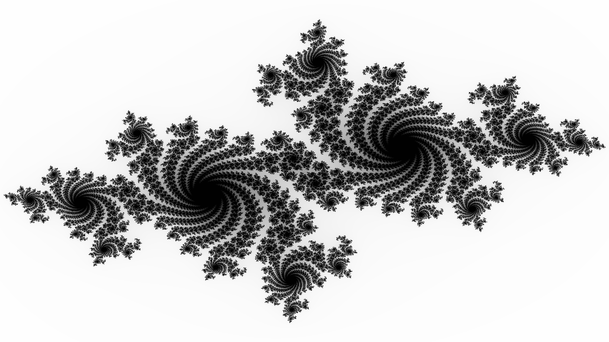
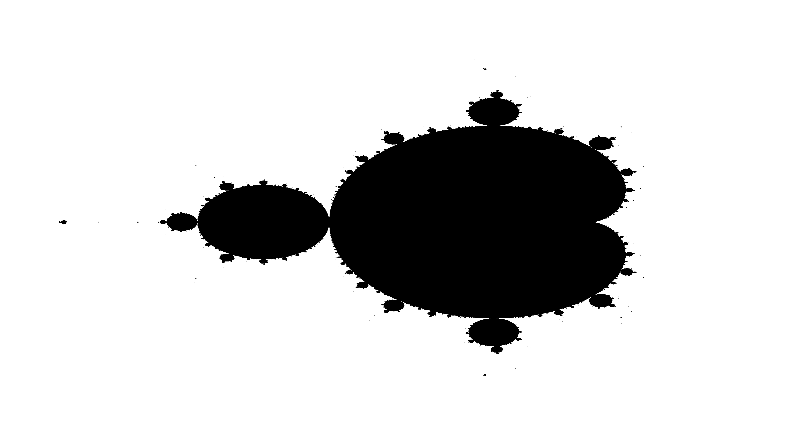
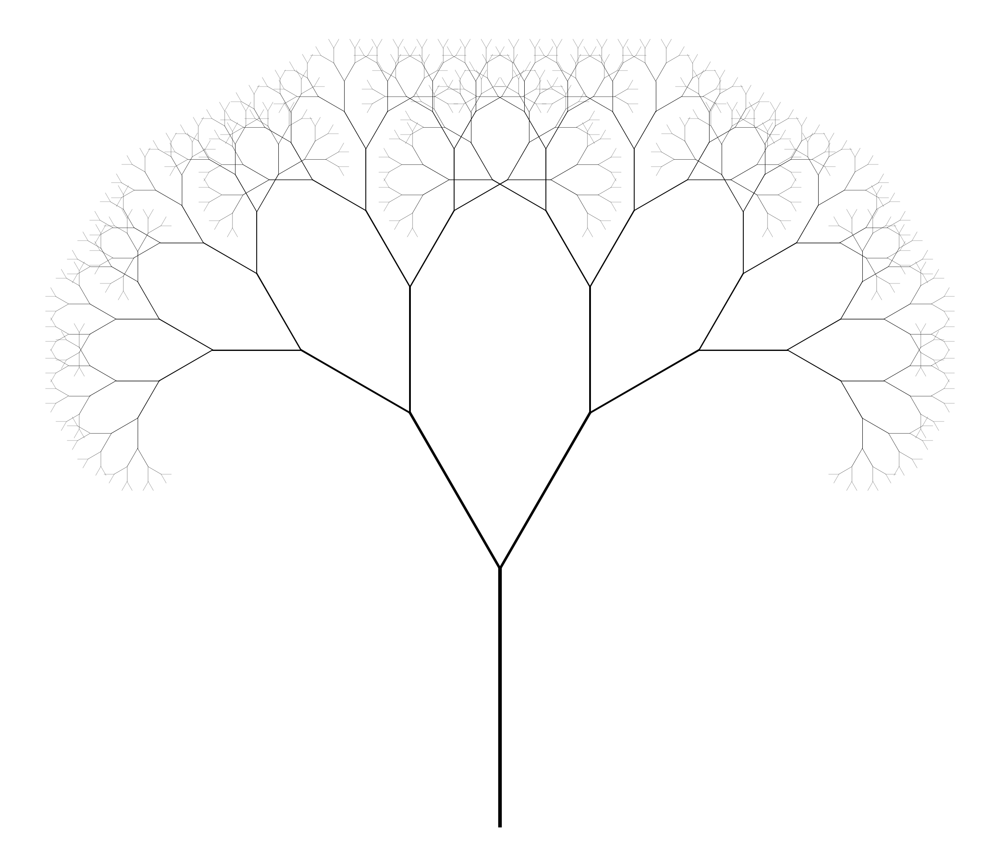

Introduction¶
"Allometry" is the study of organismal size and physiological rates of change in relation to body parts (Huxley 1932, 1950). The term "allometric" translates from Latin as "different measure," while "isometric" means "equal measure" (Huxley and Tessier 1936). Allometric scaling refers to the way that physiological or morphological traits, such as metabolism or limb size, change at different rates compared to overall size of an organism. Isometric scaling maintains the same ratio of lengths, making the object appear identical at different scales.
In 1975, Benoit Mandelbrot introduced the word 'fractal' to describe self-similar and irregular patterns found in nature (Mandelbrot 1977). In 1985 Mandelbrot published his book on self-affine fractals and fractal dimensions (Mandelbrot 1985). Mandelbrot later published on multifractals, 1/f noises, and Gaussian self-affinity in nature (Mandelbrot (2002, 2013))

Plate 1: Gaston Julia created so-called Julia sets using interative functions over 100 years ago. code written in Python.

Plate 2: The so-called Mandelbrot Set, named in honor of Benoit Mandelbrot. code written in Python.
Mandelbrot was careful to point out that natural phenomena, including hierarchical branching networks in organisms, are "fractal-like" over a limited range, unlike true fractals, which repeat infinitely. In a review of the most widely cited research on fractals in biology, we found that vascular organisms and forests are almost exclusively referred to as being "self-similar," and, critically, they were measured using self-similar fractal dimension techniques (Table 1).
For a phenomenon to be self-similar, it must have the same appearance at all scales. This is clearly not the case for organisms, as allometric theory describes changes in appearance as they grow and age (Huxley 1932, Kleiber 1932). This misuse of terminology appears to have started as an oversight by authors incorporating fractals into thir research and affecting how ecologists think about scaling processes in relation to fractal dimension.
In most cases, the misuse of "self-similar" has had limited impact on the field. For example, predictions from Metabolic Scaling Theory (MST) (West et al. 1999a, West et al. 1999b, Brown et al. 2002) remain unaffected since allometric equations are complementary to self-affinity. Acknowledging self-affinity may reconcile inconsistencies between MST and observed asymmetry in branching architectures (Bentley et al. 2013, Smith et al. 2014).
Differentiating Between Self-Similarity and Self-Affinity¶
Reported fractal dimensions of trees and forests using self-similar dimensional analysis are likely to be incorrect based on these facts. Specifically, papers that report the length dimension [Hausdorff-Besicovitch] or box-counting dimension [Minkowski-Bouligand] of hierarchical branching phenomena (leaves, branches, forests) (Table 1) are more problematic.

Plate 3: The Pythagoras Tree (Bosman 1942). Note: the fractal uses self-similar squares with a \(45^\circ\) angle, and branches asymetrically in the positive y-axis. code written in Python.
Mandelbrot (1985) explained how evaluating fractals using self-similar techniques yields inaccurate results for measuring self-affine fractals because self-affine processes change their dimension between local and global scales. Since vascular plants have self-affine geometries, measuring them with self-similar fractal dimensions is likely to produce spurious values, as demonstrated in this study.

Plate 3: A Pythagoras tree with a \(30^\circ\) angle that also includes a length and width variable. Note: the fractal uses a self-affine dimension, where branch length and width decrease at a different rate. code written in Python.
The basic fractal concept requires an object to exhibit a self-similar signal or shape, which can be measured as:
Equation 1
where \(N\) is the number of scalars \( \varepsilon \) required to measure the whole object, and \( \beta \) is a scaling exponent. Mandelbrot (1983, 1985) showed that all \( 1/f^{\beta} \) "noises" are self-affine, and \( \beta \) can be transformatively related to a fractal dimension \( \alpha \) via the Hurst exponent \( H \), such that \( \beta = 2\alpha - H \). Examples of \( 1/f^{\beta} \) noises include white noise (\( 1/f^0 \)) and Brownian noise (\( 1/f^2 \)).
A fractal object's topological dimension is given by \( \beta = \frac{\log N}{\log \frac{1}{\varepsilon}} \). A Euclidean object has a dimension \( \beta \) equal to an integer (Mandelbrot 1983). For example, if \( \beta = 2 \), the object is a square (\( \varepsilon^2 \)), or a disk where \( \varepsilon \) equals \( \pi \times \text{radius} \), and the object's mass \( m \) is equivalent to:
When a portion of the object is removed, its new surface or mass is reduced by the factor \( \delta^{\beta} \), written as:
Equation 2
Table 1: Reported fractal dimensions and techniques measuring fractal behavior in plants or forests¶
| Author(s) by Date | Self-similarity | Self-affinity | Allometric | Review (meta-analysis) | Characteristic Measured | Fractal Dimension(s) | DOI/URL |
|---|---|---|---|---|---|---|---|
| Rubner 1883 | ✓ | Ueber den Einfluss der Körpergröße auf Stoffwechsel | DOI: | ||||
| Kleiber 1932 | ✓ | Body size and metabolism | DOI: | ||||
| Hemmingsen 1960 | ✓ | Energy metabolism as related to body size and respiratory surface, and its evolution | DOI:XX | ||||
| Ultsch 1974 | ✓ | Metabolism and Skeleton size | DOI:10.2307/2424317 | ||||
| Taylor et al. 1981 | Maximum aerobic capacity | DOI:10.1016/0034-5687(81)90075-X | |||||
| Mandelbrot 1982 | ✓ | ✓ | Multiple | Multiple | DOI:10.7560/703544-005 | ||
| Bradbury and Reichelt 1983 | ✓ | ✓ | Dimensional analyses | Box-counting, Information Dimension | |||
| Sernetz et al. 1985 | ✓ | ✓ | ✓ | Multiple | Length | DOI:10.1016/S0022-5193(85)80218-6 | |
| Morse et al. 1985 | ✓ | Canopy | Length | DOI:10.1038/314731a0 | |||
| Mandelbrot 1986 | ✓ | ✓ | Multiple | Multiple | DOI:10.1016/B978-0-444-86995-1.50004-4 | ||
| Prothero 1986 | DOI:10.1016/0300-9629(86)90569-4 | ||||||
| Frontier 1987 | ✓ | ✓ | ✓ | Multiple | Length | DOI:10.1007/978-3-642-70880-0_9 | |
| Barnsley 1988 | DOI:10.1007/978-1-4612-3784-6_1 | ||||||
| Tatsumi et al. 1989 | Roots | Box Count | URL | ||||
| Loehle 1990 | DOI:10.1007/BF00153802 | ||||||
| Obert et al. 1990 | ✓ | Microbial Colony | Box Count Mass | DOI:10.1128/jb.172.3.1180-1185.1990 | |||
| Sugihara and May 1990 | ✓ | ✓ | ✓ | Multiple | Multiple | DOI:10.1016/0169-5347(90)90235-6 | |
| Zeide 1991 | ✓ | Canopy | Length | DOI:0378-1127(91)90230-S | |||
| Zeide and Gresham 1991 | ✓ | Canopy | Length | DOI:10.1139/x91-169 | |||
| Zeide and Pfeifer 1991 | ✓ | Canopy | Length | DOI:10.1093/forestscience/37.5.1253 | |||
| Fitter and Strickland 1992 | Roots | Length | DOI:10.1111/j.1469-8137.1992.tb01110.x | ||||
| Milne 1992 | ✓ | ✓ | ✓ | Multiple | Length | DOI:10.1086/285312 | |
| Milne et al. 1992 | DOI:10.1016/0040-5809(92)90033-P | ||||||
| Plotnick et al. 1993 | Lacunarity | ||||||
| Lorimer et al. 1994 | ✓ | ✓ | ✓ | Multiple | Length | DOI:10.2737/NC-GTR-170 | |
| Solé and Manrubia 1995 | ✓ | Canopy | Box Count | DOI:10.1006/jtbi.1995.0040 | |||
| Tatsumi et al. 1995 | DOI:10.1626/jcs.64.50 | ||||||
| Plotnick 1995 | DOI:10.2110/scn.95.36.0001 | ||||||
| Calder 1996 | Size and life history | DOI: | |||||
| Loehle and Li 1996 | ✓ | ✓ | Information | DOI:10.1016/0304-3800(94)00177-4 | |||
| Halley 1996 | ✓ | 1/f noises | Power Spectral | DOI:10.1016/0169-5347(96)81067-6 | |||
| Plotnick et al. 1996 | Canopy | Gliding Box (lacunarity) | DOI:10.2307/2265712 | ||||
| Weishampel et al. 1998 | ✓ | Canopy | Lacunarity | DOI:10.1016/S0303-2647(97)00092-8 | |||
| Zeide 1998 | ✓ | Canopy | Length | DOI:10.1139/x98-139 | |||
| West et al. 1998 | DOI:xx | ||||||
| Banavar, Maritan, & Rinaldo 1999 | Transportation networks | DOI: | |||||
| West 1999 | ✓ | ✓ | Branching | Box Count | DOI:10.1126/science.284.5420.1677 | ||
| West et al. 1999 | ✓ | ✓ | Branching | DOI:10.1126/science.276.5309.122 | |||
| Brown et al. 2000 | ✓ | ✓ | ✓ | Multiple | DOI:10.1073/pnas.97.11.6242 | ||
| Li 2000 | ✓ | ✓ | Patch | Information, Box Count | DOI:10.1006/jtbi.2000.2070 | ||
| Dale 2000 | Lacunarity | DOI:10.1023/A:1008176601940 | |||||
| Zhu & Bunn 2001 | Cell oxygen sensing | DOI: | |||||
| Darveau et al. 2002 | X | Metabolism | DOI:10.1038/417166a | ||||
| Hochachka et al. 2003 | X | X | Body mass effects on metabolism | DOI:10.1016/S1095-6433(02)00364-1 | |||
| Enquist et al. 2002 | ✓ | Canopy, Roots | DOI:10.1038/nature01269 | ||||
| Fitter 2002 | DOI:xx | ||||||
| Halley et al. 2004 | ✓ | DOI:10.1098/rspa.2004.1384 | |||||
| Drake and Weishampel 2000 | ✓ | Canopy | Multifractals | DOI:10.1007/s004420050009 | |||
| Eamus et al. 2002 | Roots | -- | DOI:10.1071/FP02118 | ||||
| Alados et al. 2003 | ✓ | Patch | Information | DOI:10.1016/S0304-3800(02)00268-1 | |||
| Zhang et al. 2007 | Canopy | Length | DOI:10.1016/j.ecolmodel.2006.08.002 | ||||
| Enquist et al. 2010 | ✓ | Canopy, Roots | -- | DOI:10.1098/rspb.2010.1080 | |||
| West et al. 2010 | DOI:10.1038/s41586-019-0976-6 | ||||||
| Savage et al. 2010 | DOI:10.1073/pnas.1012194108 | ||||||
| Seuront 2011 | ✓ | ✓ | ✓ | ✓ | Multiple | DOI:10.1016/j.physa.2010.09.025 | |
| Brummer et al. 2017 | DOI:10.1371/journal.pcbi.1005394 | ||||||
| Husain et al. 2022a | DOI:10.3390/fractalfract6020089 | ||||||
| Husain et al. 2022b | DOI:10.3390/fractalfract6070379 | ||||||
| Loke & Chisholm 2022 | Box Counting | ||||||
| Fischer & Jucker 2023 | ✓ | ✓ | Box Counting | DOI:10.1111/1365-2745.14244 | |||
| Ain et al. 2024 | ✓ | ✓ | |||||
| Maryenko & Stepanenko 2024 | ✓ | ✓ | box-counting, contour-scaling | Brain tissue | |||
| Authors Year ✓ | ✓ | ✓ | ✓ | DOI: | |||
| --- |